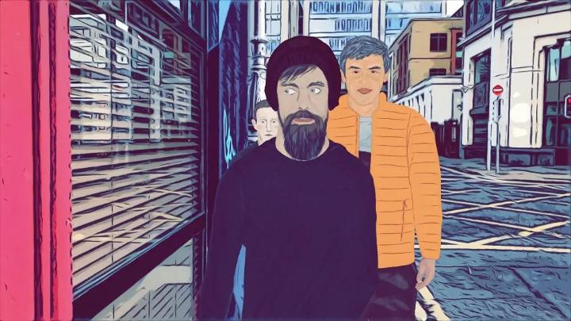

I usually try to cover animated movies that get a home video release, or at the very least, a theatrical or film festival screening. But in the modern age where creation and distribution is just a few clicks away, there's a metric tonne of animation to watch from indie artists. A true example of the indie spirit is "Silicon Docks," a 2022 animated satire feature film that received some press upon its release - entirely for free on YouTube, without monetized ads interupting you. For that alone, the small production team should be praised. To be clear, this is effectively a one-person production team, or technically two. Beyond the two-minute credits at the beginning, there's a single director (filmmaker and documentarian Graham Jones) and a single animator (Kasia Wisniewska) that were behind most of it. Like most indie movies made by one animator, it looks like it, with an extremely limited budget. Realistically, that would lower the excitement for the finished movie, but the stories and ideas in these singular projects are usually quite novel, and "Silicon Docks" doesn't disappoint. If you haven't seen it yet, you're bound to want to after hearing the premise. This fictional plot is set in late 2020. The US federal election is looming. The pandemic is still in effect. The EU is one day away from signing a collective bill that will affect how the biggest tech companies operate. So the ten CEO's of the biggest tech companies, include Facebook, Google, Amazon, Netflix, Snapchat, Twitter, Tesla, and others, meet in Dublin, Ireland to unanimously sign a letter against the EU's action (the EU's bill and the letter are both left vague and not detailed in the movie). There isn't much time, but everyone's personality clashes. Some don't agree with the letter and don't want to sign. Some don't agree with the people next to them, and won't sign based on that childish principle. Some just want to skip the meeting and go on a pub-crawl. Except the pubs are all closed, since it's a pandemic, after all. So it'll take a while for them to find one. The result is watching this bizzare set of awkward characters in deep (and not so deep) conversations as they wander around the cloudy streets of Dublin. While also wearing masks and having trouble finding public bathrooms, and the rest of the stuff the public had to deal with while rich celebrities ignored it. Each of them bring up complicated histories with each other, and how some of those present tried to buy out or copy their product(s). They each lay blame for the state of the world and widespread misinformation to each other's platforms. Occasional everyday passers-by tell them off too. It's hilarious and cathartic. I haven't yet mentioned the satiric caricatures of each character, which adds to the humour. Elon Musk appears with a voice-changing sythesizer surgically attached to his throat to sound authentic to his current region (today, Ireland), and doesn't understand half of the intellectual conversations that occur. Mark Zuckerberg barely talks like a human, giving a thumbs-up "like" to things he agrees with, and is unanimously picked on by the rest of the gang. Jack Dorsey is a zen-freak that gets along with birds better than people. There's a great conversation between Netflix's lead trying (and failing) to impress YouTube's lead. And another of Jeff Bezos trying (and failing) to dodge the question as to why he doesn't pay his taxes like everyone else.  This isn't to say that this has the knee-slapping humour of a 5-minute SNL sketch. "Silicon Docks" is written like a smart, and long, HBO drama. If you're patient, you'll find things to laugh at, often because you agree with the filmmaker's take on how ridiculous the characters are. But this does mean the pacing can feel slow and monotonous. Especially with a lack of general action (most of the film is literally heads talking to each other) across the nearly 1 hour and 30 minute runtime. The delivery of the actors and editing could have been sharper and quicker; it would be easy to cut about 20 minutes off the film by getting rid of unnecessary pauses and having actors speed up their lines. On the subject of the actors, their performance varies... one of the characters sounded like Kermit the Frog for some reason. Animation in "Silicon Docks" is fairly limited, using recognizable exagerrated faces for each of the cast, and puppet-rigged 2D bodies. Even in professional productions, it's hard to get this technique to look good, and the bodies here often look rigid and awkward. Most of the shots only have one (sometimes two) of the characters in the frame, talking to someone else off-camera. The backgrounds are live-action shots with an artistic filter to blend a little better with the 2D foreground characters, a simple but effective technique. The most engrossing moments were of moving camera shots, with two or three characters bobbing as if they were walking and talking in front of the camera as the 3D-esque background moved behind them: if you squint, it's effectively convincing and is clearly more complicated to pull off, and fits my personal interests in animation a bit better. "Silicon Docks" is an entertaining and extremely topical farce on modern-day tech-billionaires and their struggles to get along as they shape the world to their liking. It's probably too topical, and will be difficult to understand a decade later. But in its limited time-frame of relevance, and despite limited production values, I can imagine this being a sleeper hit with tech circles that are tired and frustrated with where the world ended up at the end of the 2010's. Hopefully the next generation will learn and do better.
- "Ani" More reviews can be found at : https://2danicritic.github.io/ Previous review: review_Short_Peace Next review: review_Sin_-_The_Movie